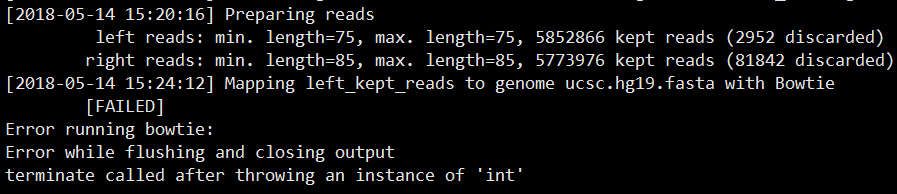

python 执行 linux 命令 —— subprocess
python 脚本内执行 linux 命令有多种方式，os.system(), os.popen()也可以，官方最新推荐方式为subprocess
1 | import subprocess |
os 模块实现 linux cmd 执行
1 | import os |
python 脚本内执行 linux 命令有多种方式，os.system(), os.popen()也可以，官方最新推荐方式为subprocess
1 | import subprocess |
os 模块实现 linux cmd 执行
1 | import os |
argsparse 解析命令行参数，一些常用参数整理。
1 | import argparse |
tophat2-fusion 文档搬运工：https://ccb.jhu.edu/software/tophat/fusion_tutorial.shtml
###step1.tophat
1 | tophat2 -p 8 -o $OUTPUT --fusion-search --keep-fasta-order --bowtie1 --no-coverage-search --fusion-anchor-length 10 --fusion-min-dist 100000 --mate-inner-dist 40 --mate-std-dev 100 $hg_bowtie1_index $read1.fastq.gz $read2.fastq.gz |
Note:
–fusion-search，融合 reads 搜索
–keep-fasta-order,
–bowtie1，使用 bowtie1 代替 bowtie2 进行 reads 比对。需要使用 bowtie-1.1.2，最新版本 1.2.2 会报错

–no-coverage-search,
–fusion-anchor-length 10 ,
–fusion-min-dist 100000 ,
–mate-inner-dist 40 ,
–mate-std-dev 100 ,
###step2.tophat-fusion-post
1 | tophat-fusion-post -p 8 --num-fusion-reads 1 --num-fusion-pairs 2 --num-fusion-both 5 $hg_bowtie1_index |
Note:
–num-fusion-reads* , 支持融合的最少 reads 数目
–num-fusion-pairs, 支持融合事件的最少配对 reads 数，表示为跨越融合点的测序片段
–num-fusion-both, 支持融合的最少 reads，包括跨越的 reads 对和 split reads
–fusion-read-mismatches, Reads support fusions if they map across fusion with at most this many mismatches. The default is 2.
–fusion-multireads, Reads that map to more than this many places will be ignored. The default is 2.
–non-human, If your annotation is different from that of human, use the option.
–fusion-pair-dist, Pairs with this specified distance are counted as supporting evidence for the fusion. The default threshold for the inner distance is 250.
测试了多个样品，多个参数，也根据官网数据、命令运行项目，都没有发现任何融合结果，bug还是打开方式不对
软件文档：https://github.com/STAR-Fusion/STAR-Fusion/wiki
##软件安装
##数据库准备
下载一个较小的未处理的参考文件，自己运行 index 命令。要是网速够快也可以直接在 index 好的数据库文件，~27G
1 | wget -c https://data.broadinstitute.org/Trinity/CTAT_RESOURCE_LIB/GRCh37_v19_CTAT_lib_Feb092018.source_data.tar.gz |
##运行STAR-Fusion
STAR-Fusion 对 STAR 输出的嵌合比对分析发现可能存在的基因融合事件
1 | STAR_FUSION_HOME/STAR-Fusion \ |
1 | STAR --genomeDir ${star_index_dir} \ |
STAR 速度还是那么让人惊喜，6m reads不到半小时。 融合结果star-fusion.fusion_predictions.abridged.tsv
FusionName,
JunctionReadCount, split align到融合点的序列片段数
SpanningFragCount, 双端reads跨越融合点的序列片段数
SpliceType, 断点是否在注释文件存在
LeftGene,
LeftBreakpoint,
RightGene,
RightBreakpoint,
LargeAnchorSupport,
FFPM, fusion fragments per million total reads
LeftBreakDinuc,
LeftBreakEntropy,
RightBreakDinuc,
RightBreakEntropy,
annots,
真是一个悲伤的故事，根据官网给的两种运行方式，结果差别这么大。查看 STAR-Fusion 脚本，使用的 mapping 参数差异有点大啊，哪一个比较合理呢（一个新坑）？？？

trimmomatic 使用 java 编写，免安装多平台运行，同时运行速度非常快。
1 | paired end |
参数选择
PE/SE
设定对 Paired-End 或 Single-End 的 reads 进行处理，其输入和输出参数稍有不一样
threads
设置多线程运行数
phred33/phred64
设置碱基的质量格式，可选 phred64
ILLUMINACLIP:
切除 adapter 序列。参数后分别接 adapter 序列的 fasta 文件，允许的最大 mismatch 数， palindrome 模式下匹配碱基数阈值： simple 模式下的匹配碱基数阈值
minAdapterLength：只对 PE 测序的 palindrome clip 模式有效，指定 palindrome 模式下可以切除的接头序列最短长度，由于历史的原因，默认值是 8，但实际上 palindrome 模式可以切除短至 1bp 的接头污染，所以可以设置为 1 。
keepBothReads：只对 PE 测序的 palindrome clip 模式有效，这个参数很重要，在上图中 D 模式下， R1 和 R2 在去除了接头序列之后剩余的部分是完全反向互补的，默认参数 false，意味着整条去除与 R1 完全反向互补的 R2，当做重复去除掉，但在有些情况下，例如需要用到 paired reads 的 bowtie2 流程，就要将这个参数改为 true，否则会损失一部分 paired reads。
SLIDINGWINDOW
从 reads 首端（ 5’端）开始进行滑动，当滑动位点周围一段序列(window)的平均碱基低于阈值，则从该处进行切除。 Windows 的 size 是 4 bp， 若其平均碱基质量小于15，则切除
MAXINFO：
LEADING/TRAILING>
切除 reads 首端（ 5’端） / reads 末端（ 3’端）碱基质量小于指定值的碱基
CROP/HEADCROP
从 reads 末端（ 3’端）/reads 首端（ 5’端）切除碱基到指定长度
MINLEN
抛弃低于指定长度的 reads
TOPHRED33/TOPHRED64
转换碱基质量格式，Illumina HiSeq 2000质量系统为phred-64，可用该参数转换到phred-33
日常工作之读文档，了解参数改变、新方法功能，对已有流程进行修改。
各种文档看一边遍一遍，使用需要又一次看 SnpEff （http://snpeff.sourceforge.net/index.html ），进行一些整理如下，不过还是建议原文，鬼知道我会在哪里写错理解错。
annotation
1 | java -jar snpEff.jar eff genome input.vcf >output.vcf |
database
人、小鼠等物种都有已经 build 的数据库，可以直接下载，链接：https://sourceforge.net/projects/snpeff/files/databases/v4_3/，注释选择基因组版本。
1 | java -jar snpEff.jar databases # 查看可用数据库 |
软件还提供了自行构建数据库，详细用法如下：
1 | 添加配置信息 |
此外，snpEff 构建数据库还支持 RefSeq, GenBank 等多种数据输入格式，具体用法查看原文档。
注意物种 codon 选择，codon 可以在 https://www.ncbi.nlm.nih.gov/Taxonomy/Utils/wprintgc.cgi 中查看，codon可以在~/snpEff/snpEff.config文件中设置：
1 | # 设置特异 codon |
dump
从数据库中提取出注释信息
1 | java -jar snpEff.jar dump -v -bed GRCh37.70 > GRCh37.70.bed |

可以看到注释信息被添加到了 VCF 中每个变异 INFO 信息中，以 ANN= 特征开始，详细的注释说明可查看官方文档 http://snpeff.sourceforge.net/VCFannotationformat_v1.0.pdf。因为基因多个转录本、相互重叠基因等原因，可以看到变异位点被多次注释，需根据实际需求进行筛选。
df -h查看卸载硬盘信息
umount /dev/sdf，停止使用的硬盘假装忙碌状态
1 | umount: /mnt/usbhd2: device is busy. |
fuser /dev/sdf，查看占用硬盘的进程
1 | /mnt/sdf: 106657c |
kill -9 106657
重新执行umount /dev/sdf
&&，cmd1 && cmd2
如果cmd1成功执行（返回0，注意设置中脚本执行返回值），那么执行cmd2
||，cmd1 || cmd2
如果cmd1执行失败，那么执行cmd2
(), {}组合逻辑控制
()组合来控制命令； {}组合控制子shell
条件判断
1 | if [ condition ]; then |
推出状态
exit n，其中n表示数字，0表示脚本执行成功无错误，1表示执行失败某处有错误
可以使用 $? 获得最后执行命令推出状态
shell脚本
循环
1 | for i in `ls ` |
序列生成
1 | seq 3 # 1 2 3 |
随机数生成
1 | echo $RANDOM |
shell 数学计算
1 | echo $((9-4)) # 5 |
九月一号开学了，暑假作业写完了没有？但是跟我并没有关系，不开学，没作业，但是好多事情啊，，，最近提交了一些数据到SRA，每次过程总是那么曲折离奇，对一些遇到的问题进行整理填坑吧。
简单说，申请BioProject，申请BioSample，填写SRA_metadata，上传数据，虽然过程清晰，坑还没填完，仍在邮件NCBI，过程供参考。
申请一个项目编号，填写submitter 信息，选择项目类型（Raw sequence reads），物种名称，释放时间，项目描述，BioSample和文章信息（跳过，跳过，，），核对提交
申请一个样品编号，submitter 信息，释放时间，样品类型，填写样品属性表格，核对提交
主要就填写SRA_metadata，测序平台，文库类型等等，选择批量提交，填写表格注意看要求啊，除了样品名称、登录号等信息，其他属性组合每行也要是唯一的。
看数据大小，选择合适上传方法吧，小于2G用aspera浏览器插件，大数据选择ftp或者aspera命令行。这几次都用了aspera cmd上传，霸占几乎全部网速，很快上传好
具体命令为：ascp -i <path/to/key_file> -QT -l100m -k1 -d <path/to/folder/containing files> subasp@upload.ncbi.nlm.nih.gov:uploads/XXX@xxx.com_g3O1FgOE， 其中key必须是全路径，-d接包括原始数据的文件夹（不再包含其他文件夹），XXX@xxx.com为注册账号邮箱
上传结束后，SRA中选择上传数据文件夹，，，
好了，装逼结束，文件没仔细检查，传了两不完整的fastq，发邮件给ncbi沟通呢，md5值也还没有用到，不知什么情况，，，too young, too naive…
没有对象怎么办（object）？？？当然是new一个啊
1 | class Sequence(object): |
懒癌发作了，就这，，，